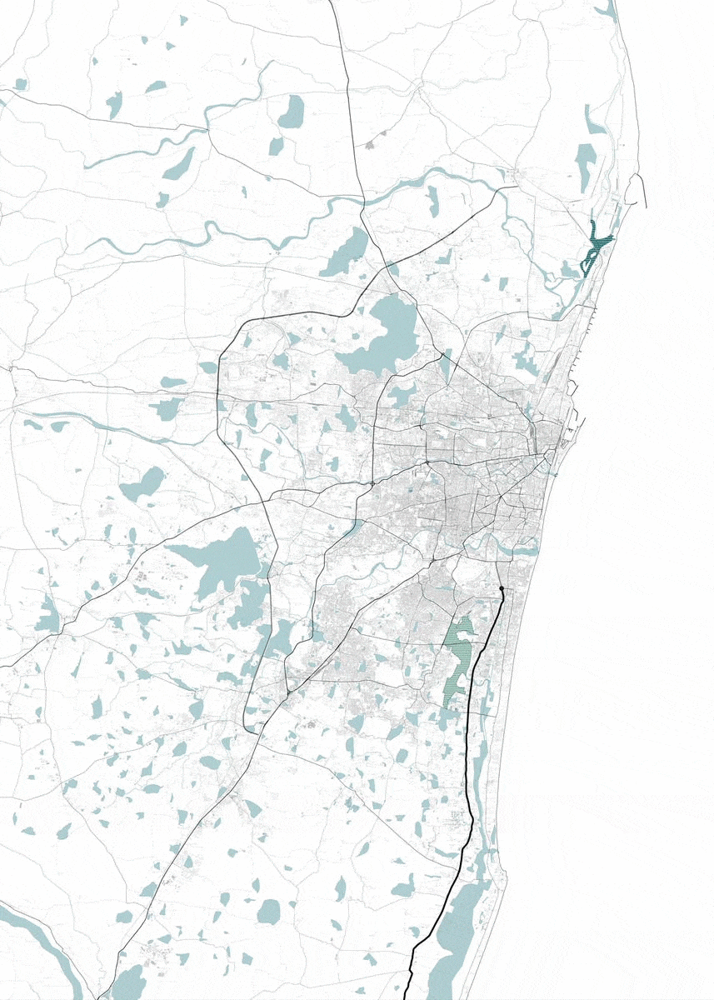

A city built of air
Far from being neutral backdrops to one another, Chennai and the airs of the monsoon are intra-active and mutually constitutive. Here we explore Chennai’s history as coproduced by the multiple aerial dynamics of the monsoon and the human actions that have colonised, leveraged or transformed them.
Top: Pigeons on Elliots Beach, Chennai.
Bottom: Pollutant datascape, Pallikaranai Marsh, Chennai.
Colonising the wind
From the time of the early Tamil Kingdoms (300 BCE-300 CE), sailing communities were trading around the Bay of Bengal and the Mediterranean was linked with southern China by the winds of the monsoon. From the early seventeenth century onwards, Europeans colonised these ancient trading networks and the winds that enabled them. In 1639, merchants of the English East India Company (EEIC), founded Madras on a sandy spit of land on the Bay of Bengal granted to them by Vijayanagara nayak Darmala Venkatapati. Here they constructed Fort Saint George as the nucleus of their settlement. Soon buildings and streets sprang up to the north of the fort and merchants and weavers established themselves.
Top: Precolonial trading routes in the
Indian Ocean.
Bettom: A katumarram, the traditional
Tamil watercraft, origin of the English
word catamaran
Top right: J. van Ryne, ‘Fort St George
on the Coromandel Coast: Belonging
to the East India Company of England’,
London, Printed for Robt Sayer, 1754.
Source: British Library.
Centre right: The steep profile of the
beach in Chennai.
Bottom left: The Armenian Church,
Georgetown, Chennai, constructed in
1712, reconstructed in 1772.
Bottom right: Contemporary fishing
shelter on the beach in Chennai.
Video: Launching of a fishing boat from
the beach in Chennai.

“Before the understanding of the monsoon winds, there was no Indian Ocean world. People on the shores of the Ocean used the sea sparingly and had limited horizons operating in discrete enclaves such as the Red Sea and the Persian Gulf, or among the islands of South East Asia. But with the discovery of the monsoons the boundaries of these enclaves expanded, so that the Arabian Sea and the Bay of Bengal became the arenas for growing mercantile activity”.1
Cyclones and depression
“Are you not scared of the Bay of Bengal?
You ought to be!”3
The Bay of Bengal is notorious for its depressions
and cyclones. They are the dread of navigators
who cross it and of the people who live on its
shores. Given its exposed location, Madras was
susceptible to these dynamics from the start and
destructive cyclonic storms and depressions are
written into its history. In November and December
2015, a widespread depression over the southern
Bay resulted in prolonged heavy rainfall over
Chennai, resulting in extensive flooding and loss
of life. Flooding was aggravated by bureaucratic
unpreparedness and development patterns that had
compromised the landscape’s capacities to retain
and absorb water.
“About Eight at night, arose a very violent Tempest from the N.W., which Continued Rounding to the Southward for about 7 hours, with the greatest Rage that Could be in the force of the wind, as appeared by its Ruinous effects in so short a tyme, Killing Severall, and blowing down many howses, walls and Trees, and levelling most of the adjacent Gardins with the Common Sand. Nor was there any building in Town able to Support it Selfe against it, but being Sensible of its power and danger, trembled or fell with weakness”.2
Left: J. Eliot, ‘Hurricane track over the
Bay of Bengal, 27 April to 01 May 1840’,
Handbook of Cyclonic Storms in the
Bay of Bengal, Calcutta, Government
Printing Office, 1900. Source: author’s
possession.
Right: Cover design and storm card from
the Sailor’s Horn Book for the Law of
Storms, Henry Piddington, London, 1848.
Storm cards were used to chart the track
of a storm based on observations of the
rotation of the wind.
Top: Photographs of Chennai from the air showing extensive flooding,
November 14, 2015.
Centre and Bottom: This series of plans and perspectives represent the
atmospheric conditions over the Bay of Bengal and South India during
November 2015, leading up to the floods of December that year. During
early November a deep depression named BOB 03 formed over the Bay
of Bengal. It made landfall on the Tamil Nadu coast on 9th November,
bringing heavy winds and rains. Towards the end of the month another
low pressure system developed, dragging rain and clouds over the city
of Chennai, where, once trapped by the raised topography of the Eastern Ghats, serious flooding occurred
Segregated airs
Chennai is one of the hottest cities in India. It is made habitable by sea breezes and evaporative cooling from its tanks and backwaters. These dynamics are reflected in the city’s layout. Early Tamil settlements were organised in concentric patterns around temple tanks, with higher castes located closest to the tanks where they benefited from convective cooling. Colonial Madras was laid out in long urban blocks on the coastal spit to the north of the Fort, which allowed buildings to take maximum advantage of sea breezes. By the early 1900s, these blocks were occupied by traders and lower caste groups, while Brahmins congregated around traditional temple tanks or on the back, more protected side of the coastal dunes. Europeans lived in garden estates to the west or south of the town. This pattern of aerially attuned social and spatial segregation continues today
“Fort Saint George … is situated in one of the most incommodious Places I ever saw. It fronts the Sea, which continually rolls impetuously on its Shore, more here than in any other Place on the Coast of Choramandel [sic] … the Sun from April to September scorching hot, and if the Sea-breezes did not moisten and cool the Air when they blow, the place could not possibly be inhabited”.4
Top left: Street in Washermanpet, a
traditional working class neighbourhood in
north Chennai.
Centre and bottom left: The Theosophical
Society on the banks of the Adyar River
Top right: A roof terrace catching sea breezes
in Valmiki Nagar.
Bottom Right: River Club on the banks of the
Adyar River
Top left: ‘Prospect of Fort St. George and Plan of the City of Madras
actually surveyed by order of the late Governr. T. Pitt, 1710’, London, 1913. Source: British Library.
Centre left: W. Faden, ‘The Environs of Madras Surveyed in
1814’, Charing Cross, Geographer to his Majesty and His Royal
Highness the Prince Regent, 1816. Source: British Library.
Bottom left: H.V. Lanchester, ‘Plate M.II. Madras Town’ Town
Planning in Madras: a review of the conditions and requirements of
city improvement and development in Madras, London: Constable
and Company, online.
Right: The expansion of the city of Chennai, showing Madras in 1900
and 1954 and Chennai in 2010.
Moisture from the air
Speculative drawing of hydrological flows around Chembarambakkam Lake, Chennai.
During Tamil Nadu’s Chola Dynasty (850-1280) a tank based water management system was developed to retain and redistribute northeast monsoon rainfall. Today tanks, along with marshes and coastal backwaters, play a significant role in water management within the wider ecology of water infrastructures. Tanks contribute to local ecologies, drawing moisture from the air and inducing localised rain showers. However, because they expand and contract with the seasons, their fluctuating wetness makes them targets for development, reducing the water retaining capacity of the landscape. Development patterns have led, not only to water insecurities, but also to increased incidents of flooding and water logging.
"There are also many low lying places full of water during part of the year and during the other portion dry … while they are drying up, poisonous matters are evaporated into the air and when dry, they send forth from their beds the exhalation of the solid filth collected during the rainy season”.5
Meteorological science

In the mid-eighteenth century, the English East India Company produced the first colonial astronomical survey in India and established a permanent astronomical observatory in Madras. Its Nungambakkam site served as the datum for the Great Trigonometrical Survey through which the British established their control over India. Today meteorology and weather forecasts are firmly embedded in the Chennai’s social and cultural imaginary and the city’s amateur weather bloggers have massive social media followings. Meteorology is more than science in Chennai, it is a way of thinking that entangles the air and its dynamics in culture, social relations and daily life.
Top: 1870 Index Chart of the Great
Trigonometric Survey of India.
Bottom: Historic monument to the first
meteorological observatory of 1792 and
contemporary meteorological instruments
at the Chennai Regional Meteorological
Centre, Nungambakkam.
Aerial economics

“Over here, it is almost as if growth and urbanisation are forces of nature and the forces of nature do not matter”.6
India’s post independence economy was centrally planned and managed until the 1990s, when economic reforms promoted information technology (IT) as an engine of economic growth. As a result, electromagnetic waves have become national resources, much like water, land, gas or minerals and national legislation governs competition over the wave spectrum. However, humidity, air pressure, air temperature, rain, rainfall rate and wind all impact the quality of wave propagation. This became clear when Cyclone Vardah made landfall on Chennai in December 2016. It damaged a number of key undersea fibre optic cables, impacting IT, banking, telecommunications and social media. The cyclone exposed the extent to which India’s digital economy is entangled with and exposed to the inhuman dynamics of the aerial monsoon and its modes of world-making.
Top: Cyclone damage after Cyclone Vardah
in Chennai in 2016. It is estimated that the
city lost 170,000 trees to the storm.
Bottom: A storm cloud passes over R.A.
Puram in Chennai.
Aerial corridor

Left: The metropolitan extent of Chennai.
Drawing 1 shows the intense saturation
and retention of water across the
landscape from between September and
December 2015. Drawing 2 highlights the
locations of the IT Corridor in the south
and Ennore Creek in the north.
Right: Map of the IT Corridor showing
Special Economic Zones and IT premises.
Along with Karnataka and Maharashtra, Tamil Nadu introduced IT policies in the 1990s and IT became Chennai’s leading economic driver. The Old Mahabalipuram Road (OMR) to the south of the city was reinvented as an IT corridor and a package of fiscal, administrative and physical incentives turned vast swathes of agriculture, marshlands and backwaters over to infrastructure, IT parks, housing, shopping malls, hotels, entertainment complexes, medical facilities and schools. Soon this emerging constellation became the motif for the structural, environmental, economic and social changes underway in the city, including rampant speculation, corruption and the relocation of the poor to the urban periphery


South Chennai marshland construction 1: Plot boundaries are demarcated for sale using reinforced concrete posts.

South Chennai marshland construction 2: Water bodies and marshlands are filled with rubble or waste to raise their levels

South Chennai marshland construction 3: Buildings are constructed on pilotis or plinths to protect from flooding.

South Chennai marshland construction 5: IT premises along the Rajiv Ghandhi Salai or IT Corridor.

South Chennai marshland construction 6: Marketing hoardings and billboards constructing real estate aspirations.
“The IT industry came looking for cheap land, all the cheap land was taken, so the only thing the city had to offer was cheap water… the marshland … The thinking at that time, and the thinking still remains the same, what value is a marshland? It’s just lying there, unproductive, yielding no revenue, what does it do? Whereas if I bring in an IT company, there will be so much construction, that will put the GDP ahead, it will look cool, more people will come, there will be employment. So, in your value system you value an IT industry more than you value a marshland”.7
Time line of the IT corridor showing institutional architecture, legislation, planning frameworks, policies, satellite infrastructure, rainfall, floods, droughts and cyclones.
Collage of construction work and landscape transformation around the Elcot Special Economic Zone in south Chennai.
Aerial injustice
Above: ‘Let Chennai Breath’, Ft. G. Logan and
Sofia Ashraf, Vettiver Collective. Permission
for use by Nitynand Jayaraman.
Below: North Chennai Thermal Power
Station, Ennore; unlawful disposal of flyash
into the Ennore Creek; electrical distribution
infrastructure and air-conditioning.
With the rise of the IT economy with its dedicated sub-stations, heat generating technologies and increasing reliance on air-conditioning, Chennai’s energy demands escalated. Two thermal power plants were built at Ennore in the north of the city, supplied with coal through Ennore Port. The power stations’ emissions pollute the air with toxic particles that, when inhaled, enter the brain, the lungs and the heart, causing devastating health problems. This is having particularly impact on the fishing communities of Ennore Creek where ambient air pollution clusters.
“South Chennai has historically been the place where people want to do all the good things, and North Chennai is where we do the bad things. We have all our coal fired power plants there, we have a garbage dump there, a desalinisation plant there, a chemical refinery there. If you look at it as an environmental justice thing, you will see that the beneficiaries are here and the people that pay the price are there”.8
Toxic Tales of air pollution from North Chennai, Vettiver Collective. Permission for use by Nitynand Jayaraman.
“Health studies have shown a significant association between exposure to fine particles and premature mortality”.9
Anthropocene airs
The movement of aerosols over India on November 04, 2019 when an abnormal lull in monsoonal weather patterns dragged smog released from agricultural stubble burning practices in the north down the eastern coastal regions to Chennai. The drawing is an accumulation of aerosol measurement products, with ranging spatial and spectral resolutions; topography and atmospheric pollutants are revealed through satellites’ eyes, and their overlapping areas of coverage and blind spots acknowledged.
Aerial emissions are mobile and caught up in systems that extend way beyond urban limits. In November 2019, winds bore hazardous plumes of pollution from Punjab and Haryana all the way down the Coromandel Coast to Chennai. As pollution levels rose, forecasters searched for signs of depressions over the North Andaman Sea, which would not only generate rain for Chennai, but also pull the smog filled air currents eastwards. They were a reminder that monsoon air is emergent and unpredictable and exposed Chennai’s citizens to the eventfulness of its ways.
¹ K. McPherson, A History of People and the Sea, Delhi, Oxford University Press, 1993, p. 123.
² H.D. Love, Vestiges of Old Madras, 1640-1800, London, John Murray, 1913, p. 479.
³ Chennai activist interviewed by Lindsay Bremner and Beth Cullen, July 2017
4 A. Hamilton, A New Account of the East Indies, London, John Mosman, 1727, p. 358.
5 Jones in H.V. Lanchester, Town Planning in Madras: a review of the conditions and requirements of city improvement and development, London, Constable and Company, 1918, pp. 102-103.
6 Chennai activist interviewed by Lindsay Bremner and Beth Cullen, July 2017.
7 Chennai activist interviewed by Lindsay Bremner and Beth Cullen, July 2017.
8 Chennai activist interviewed by Lindsay Bremner and Beth Cullen, July 2017.
9 Coastal Resources Centre, Unfit to Breath, Madras, 2016, p. 11.
10 https://www.facebook.com/pg/tamilnaduweatherman/about/?ref=page_internal
Weather Report Chennai
01-19 August 2017
R. Pradeep John
R. Pradeep John is an independent Chennai based weather forecaster and blogger. He
posts on Facebook under the name ‘Tamil Nadu Weatherman,’ and has around 250,000
followers.10 The following are extracts from his Facebook page during August 2017.
The posts provide accounts of when and where rain is falling at a very local scale, and
predictions of how this is likely to change, sometimes at hourly intervals. They combine
predictions, warnings, social commentary, instructions on how to interpret weather data
and simply a love for rain. They are a detailed source of information about monsoon
air, its behaviour, what influences it, how to predict its movements and what the
consequences are for humans when its water vapour condenses and falls as rain.
Text by Lindsay Bremner.
Design by Jonathan Cane.
A city built of air
Drawing by Tom Benson.
Video by Lindsay Bremner.
Colonising the wind
Drawing by John Cook.
Sources: Aerial Imagery: NASA Blue Marble Imagery, Global GIS Data: Natural
Earth Data, Climatic Data: NOAA/NCEP CFSv2 Climate Forecast; J.D. Fage, An
Atlas of African History, London, Africana Publishing Company, 1978.
Photographs by Lindsay Bremner and Beth Cullen.
Video by Lindsay Bremner.
Cyclones and depressions
Drawings by John Cook.
Sources: Climatic Data: NOAA/NCEP CFSv2 Climate Forecast System + NASA
Earth Observations; Aerial Imagery: NASA Blue Marble Imagery:Topography +
Bathymetry: ETOPO1 Global Relief Model;
Observation Instruments: WMO Integrated Global Observing System Stations
Catalogue.
Photographs by Lindsay Bremner.
Segregated airs
Drawings by John Cook.
Sources: Local GIS Data: OpenStreetMap; Topography: STRM 1-Arc Second
Global DEM; Historic Maps: 1905 Map of Saidapet Taluk, Chingleput District:
Survey Office, Madras; 1909 Map of Madras and Environs: Imperial Gazetteer of
India; 1954 U.S Corps of Engineers Map of Madras & Conjeeveram (Madras: AMS
ND 44-10 series U502, Conjeeveram: ND 44-14 series U502).
Photographs by Lindsay Bremner, Beth Cullen and Anthony Powis.
Moisture from the air
Drawing by Tom Benson.
Source: Local GIS Data: OpenStreetMap.
Photographs by Lindsay Bremner and Beth Cullen.
Meteorological science
Map: Wikimedia Commons
Meteorological data: https://www.facebook.com/praddy06
Photographs by Lindsay Bremner.
Aerial economics
Photographs by Beth Cullen.
Video by Lindsay Bremner.
Aerial corridor
Drawings by John Cook and Lindsay Bremner.
Sources: Local GIS Data: OpenStreetMap; Topography: STRM 1-Arc Second
Global DEM; Water Surface Flooding: ESA Sentinel-1 Satellite Imagery, Copernicus
Sentinel data [acquired 2019], processed by ESA’s Sentinel Toolkit; Google Earth.
Photographs by Lindsay Bremner and Beth Cullen.
Aerial injustice
Music Video by Ft. G. Logan and Sofia Ashraf, Vettiver Collective. Permission for
use by Nitynand Jayaraman.
Source: YouTube.
Toxic Tales Videos by the Vettiver Collective. Permission for use by Nitynand
Jayaraman.
Source: YouTube
Photographs by Lindsay Bremner and Beth Cullen.
Anthropocene airs
Drawing by John Cook.
Sources: Satellite Instrument Imagery: NASA Worldview [NASA TERRA/ AQUA
(MODIS), NASA AURA (OMI), NOAA’s Suomi NPP (OMPS and VIIRS)]; Climatic
Data: NOAA/NCEP CFSv2 Climate Forecast + NASA Earth Observations.